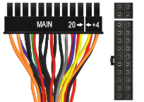

Components
Cases and Form Factors
Motherboards
BIOS/UEFI
Memory
Processors (CPUs)
Video Cards
Cooling
Power Supply
Power Supply
Introduction
Power supplies are responsible for powering every component in a computer system. Power supplies perform the following functions:
- Convert alternating (AC) power to direct current (DC) power.
- AC is the type of current distributed through wall sockets. The voltage alternates between a negative and a positive charge. AC power is good for appliances requiring a high current.
- DC is the type of current used inside a computer. Negative particles are drawn toward a positive charge, creating a unidirectional current flow. This type of predictable, reliable current is ideal for components that require a lower current.
- Provide components with the correct levels of DC voltage.
- Standard Advanced Technology eXtended (ATX) power supplies provide + 3.3 volts, +/- 5 volts, and +/- 12 volts of DC power. Most modern components require +12 volt output.
- Each voltage output circuit is referred to as a rail and can power multiple devices.
- To avoid overloading one circuit, many newer power supplies have two or more +12 volt rails.
- These are known as dual rail power supplies.
- Separate rails balance the power load between multiple circuits, preventing any one circuit from becoming overloaded.
- Aid in thermal management.
- All ATX power supplies have a fan that cools the unit.
- The fan direction pulls cooler air from the front of the case and blows hot air out the back.
Troubleshooting Power SUpplies
Following are tips for troubleshooting power supplies.
- Familiarize yourself with the symptoms of a bad power supply.
- The computer does not turn on.
- The computer sporadically shuts off or reboots.
- A broken or noisy fan.
- Rule out the obvious before opening the computer. Make sure:
- The power cord is plugged into the wall.
- The power switch is in the on position.
- The voltage switch is set to the correct voltage.
- Test the power supply using a multimeter or power supply tester. Voltage levels should be within +/- 5% of normal. If they aren't, the power supply is bad or failing and you should replace it.
- 12 V rail should be between 11.4 and 12.6 volts.
- 5 V rail should be between 4.7 and 5.25 volts.
- 3.3 V rail should be between 3.1 and 3.4 volts.
- Take proper safety precautions. Power supplies carry dangerous levels of electrical current. You should:
- Never ground yourself when working on a power supply.
- Never open or disassemble a power supply. Always replace the entire unit.